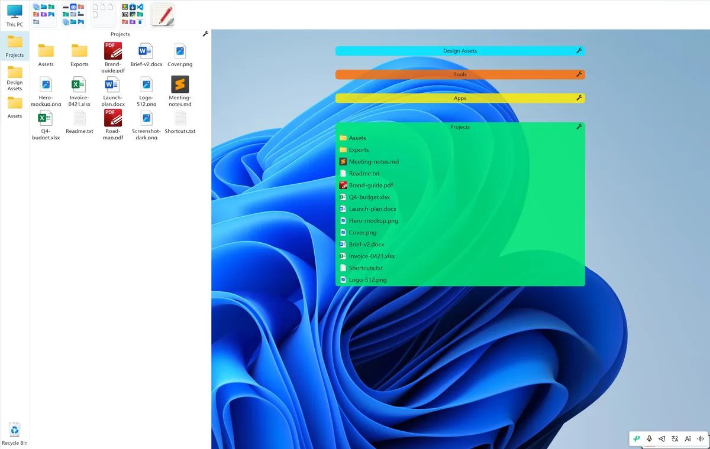
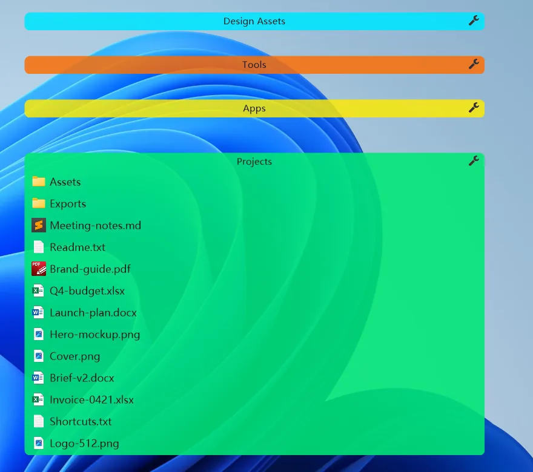

Get a box without leaving your window
Tap a hotkey and a box floats above the window you're using; when you're done it sinks back on its own. The desktop can be wallpaper-only all day.
Check the hotkey first
Default is Win + the key above Tab (printed as ` on US keyboards). In Settings Center → General → “Hotkey to toggle float/sink box” you can also enable Ctrl, Alt, and F9 — all four can be on at once.
The key is identified by physical position, not by what’s printed: US is `, German is ^, French is ² — the app converts automatically by current layout. Just press the key in that position.

Steps
Tap = toggle float / sink
When a box is in the background, tap the hotkey and it floats to the front, above the window you’re using; click its files or programs directly; tap again to sink immediately. A left-click on the tray icon also toggles.
So you don’t have to switch to the desktop or minimize your current window.
Hold = keep it up
After it floats, hold any enabled hotkey and the box stays in front, not auto-sinking; on release the timer starts, and it auto-sinks when due (default 1.5 s).
A short tap also auto-sinks after the delay — holding isn’t a precondition for sinking, it just pushes the timer back.
Change the auto-sink time
Settings Center → General → Window behavior → “Auto-sink delay”, slider 0.3–3.0 s. Without PRO, the fastest is 1.5 s.
Want it fully out of the way: set a box to “Hidden”
Settings Center → Box Management → select box on the left → “Box state” on the right → Idle state → “Hidden”. This hides the whole window, no title bar on the desktop, only wallpaper shows.
To have it appear only on call, set “Called state” to “Show on hover”. A 1 px edge hot-zone remains as the trigger; only in game mode are the hot-zones hidden too.
Temporarily stash everything: Game mode
Tray menu → “Game mode”, or Ctrl + Alt + G. Hides all boxes and edge hot-zones; on exit, restores to the pre-entry float/sink state.
It’s a manual switch — it doesn’t detect whether you’re gaming; state isn’t persisted, restart returns to normal mode.

Where idle/called states are changed
| Where | Options | Default |
|---|---|---|
| Settings Center → Box Management → Box state → Idle | Foreground / Pin to desktop / Hidden | Normal box “Pin to desktop”; mapping bar, dock, file panel “Hidden” |
| Same → Called | Foreground / Pin to desktop / Show on hover | Normal box “Foreground”; file panel “Show on hover” |
| Settings Center → General → Hotkey | Win / Ctrl / Alt + key above Tab, F9 | Win only |
| Settings Center → General → Window behavior | Auto-sink 0.3–3.0 s | 1.5 s |
Common mistakes
Hold to raise, release to immediately retreat
A tap is the float/sink toggle; holding only stops auto-sink, and after release it waits the set delay (default 1.5 s) before sinking.
After fully hiding, nothing remains on screen
The box window is fully hidden with no title bar, but the top and left edges each keep a 1 px hot edge as the trigger.
Game mode auto-detects games
It doesn’t check processes; it’s a manual switch via tray or Ctrl+Alt+G; state resets on restart.
The hotkey is only Win + `
Four routes can be enabled, and it’s identified by physical position, so changing keyboard layout needs no setting change.
The result: “using a box” and “seeing the desktop” become two separate things. The desktop can be wallpaper-only all day, while everything you need is just one keypress away.